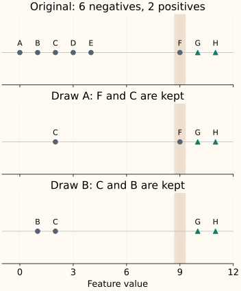

Random Undersampling
Random undersampling makes training smaller by selecting fewer rows from the classes you choose to reduce. In the common binary case, keep the minority examples and randomly retain only some majority examples.
This can reduce training work and change the class influence. Its central tradeoff is coverage: a row that is not selected cannot teach this fitted model anything. We will track both the retained identities and a particular majority example that may disappear.
Select a subset, not a new measurement
There are six negatives A–F and two positives G–H. Select two of the six negatives without replacement, so no negative can be selected twice. Keep both positives. The resulting training set has four rows, two from each class.
One draw keeps F and C; another keeps C and B. Both have the same class counts. They contain different evidence.
The majority class can contain rare, useful situations
Now give the rows a one-dimensional feature. A–E have values 0–4, F has value 9, and positives G–H have values 10 and 11. F is the only observed negative close to those positives.

F might represent an unusual operating condition within the majority class. Removing it may weaken coverage even though the majority class still has many examples elsewhere. This figure identifies missing evidence; it does not prove which resulting classifier will perform better.
Keeping two of six negatives gives every particular negative a 2 / 6 = 1/3 chance of retention. F is absent in two thirds of possible uniform draws. Repeating an experiment with a different seed measures sensitivity to this selection; it does not recover F for a model trained on a draw that omitted it.
Probability of losing an entire majority subgroup
Suppose the majority class has $N$ rows, a subgroup occupies $r$ of them, and we retain $m$ rows uniformly without replacement. There are $\binom{N}{m}$ possible retained subsets; $\binom{N-r}{m}$ use only rows outside the subgroup. The symbol $\binom{a}{b}$ counts ways to choose $b$ distinct objects from $a$.
When $m>N-r$, omission is impossible and the numerator is zero. With N = 6, r = 1 and m = 2, the probability is 10 / 15 = 2/3. The formula describes sampling coverage, not the eventual classifier’s error rate.
Choose how many rows to retain
sampling_strategy={0: 2} requests a final count of two rows for class 0. It removes four of the original six. A binary float such as sampling_strategy=0.5 instead requests a final minority-to-majority ratio of 1:2. With two positives, that retains four negatives.
The default "auto" brings the other classes down to the smallest class’s count. This can discard a large fraction of the training data. With 990 negatives and 10 positives, full balancing keeps only 20 rows, whereas a milder target of 100 negatives keeps 110.
Use a target that is justified by validation performance and training cost. A ratio closer to 1 is not automatically better. The task objective decides whether any improvement in minority recall is worth the other changes.
Without replacement means distinct retained rows
RandomUnderSampler defaults to replacement=False, as do this chapter’s examples. A target of two negatives then means two distinct negative source rows. With replacement=True, the selected output can contain duplicate identities, reducing distinct coverage further even if its row count is unchanged.
The algorithm samples by class and does not examine feature distances to decide which majority rows are useful. Methods that select rows based on boundaries or clusters make additional assumptions; they are different algorithms. Likewise, class weights retain the rows and alter their loss contributions.
Use the smaller set for fitting, then evaluate the intended workload
Choose the split before undersampling and resample only its training side. Keep validation and test cases representative of the population to be served. A balanced fitting set does not establish balanced prevalence at deployment, and scores may need the probability interpretation checks discussed with weighting.
Compare no sampling, several retained counts, and reasonable seeds under the same evaluation design. Report the retained row count and training budget: fewer rows per epoch also means fewer updates at a fixed batch size. An ensemble of different subsets can expose different models to more majority examples, but it adds training work and is a separate method choice.
The sampling pipeline example shows the shared fit/predict contract. Substituting RandomUnderSampler changes training selection; it still does not remove validation or prediction-time inputs.
Python: recover the retained source identities
Inspect two equally balanced draws
import numpy as np
from imblearn.under_sampling import RandomUnderSampler
X = np.array([0, 1, 2, 3, 4, 9, 10, 11]).reshape(-1, 1)
y = np.array([0] * 6 + [1] * 2)
ids = np.array(list("ABCDEFGH"))
for seed in [0, 1]:
sampler = RandomUnderSampler(
sampling_strategy={0: 2}, replacement=False, random_state=seed,
)
X_resampled, y_resampled = sampler.fit_resample(X, y)
print(ids[sampler.sample_indices_].tolist())
print(np.bincount(y_resampled).tolist())
['F', 'C', 'G', 'H']
[2, 2]
['C', 'B', 'G', 'H']
[2, 2]The source index array lets you select row-aligned labels and metadata consistently and audit which examples were excluded. The output order can change; do not assume a prefix of the original dataset was retained.
C++: shuffle candidate indices, then retain a prefix
This binary helper targets the negative class and requires both classes to be present. Shuffling without replacement ensures distinct negative indices. As with oversampling, the seeded C++ draw is not promised to match NumPy’s sequence.
Compile an undersampler that preserves source identities
#include <algorithm>
#include <iostream>
#include <random>
#include <stdexcept>
#include <vector>
std::vector<std::size_t> undersample_indices(const std::vector<int>& y,
std::size_t target_negative, unsigned seed) {
std::vector<std::size_t> negative,positive;
for (std::size_t i=0;i<y.size();++i) {
if (y[i]!=0 && y[i]!=1) throw std::invalid_argument("binary labels required");
(y[i]==0 ? negative : positive).push_back(i);
}
if (negative.empty() || positive.empty() || target_negative==0 ||
target_negative>negative.size())
throw std::invalid_argument("both classes and a valid retained count required");
std::mt19937 rng(seed);
std::shuffle(negative.begin(),negative.end(),rng);
negative.resize(target_negative);
negative.insert(negative.end(),positive.begin(),positive.end());
return negative;
}
int main() {
const std::vector<int> y{0,0,0,0,0,0,1,1};
const auto indices=undersample_indices(y,2,0);
const auto negatives=std::count_if(indices.begin(),indices.end(),
[&](std::size_t i){return y[i]==0;});
std::cout << "rows=" << indices.size() << " negatives=" << negatives << "\n";
}
rows=4 negatives=2When minority coverage is the limiting factor, neither copying positives nor dropping negatives creates new positive situations. The next chapter introduces SMOTE’s interpolation assumption and shows how to inspect the feature vectors it generates.
References and further reading
- Imbalanced-learn: RandomUnderSampler — final class counts, replacement options and retained source indices.
- Imbalanced-learn: random undersampling — class-wise random selection and its distinction from more structured selection methods.
- Imbalanced-learn: resampling pitfalls — keeping sampling inside the training boundary and preserving evaluation prevalence.